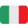
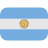
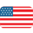
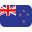
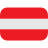
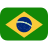
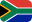
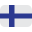
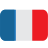
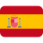

ALBO D'ORO PILOTI
| Anno | Pilota | Nazionalità | Scuderia |
|---|---|---|---|
| 1950 | Nino Farina |  |
Alfa Romeo |
| 1951 | Juan Manuel Fangio |  |
Alfa Romeo |
| 1952 | Alberto Ascari | Ferrari | |
| 1953 | Alberto Ascari | Ferrari | |
| 1954 | Juan Manuel Fangio | Maserati/Mercedes | |
| 1955 | Juan Manuel Fangio | Mercedes | |
| 1956 | Juan Manuel Fangio | Ferrari | |
| 1957 | Juan Manuel Fangio | Maserati | |
| 1958 | Mike Hawthorn | Ferrari | |
| 1959 | Jack Brabham | Cooper | |
| 1960 | Jack Brabham | Cooper | |
| 1961 | Phil Hill |  |
Ferrari |
| 1962 | Graham Hill | BRM (British Racing Motors) | |
| 1963 | Jim Clark | Lotus | |
| 1964 | John Surtees | Ferrari | |
| 1965 | Jim Clark | Lotus | |
| 1966 | Jack Brabham | Brabham | |
| 1967 | Denny Hulme |  |
Brabham |
| 1968 | Graham Hill | Lotus | |
| 1969 | Jackie Stewart | Matra | |
| 1970 | Jochen Rindt |  |
Lotus |
| 1971 | Jackie Stewart | Tyrrell | |
| 1972 | Emerson Fittipaldi |  |
Lotus |
| 1973 | Jackie Stewart | Tyrrell | |
| 1974 | Emerson Fittipaldi | McLaren | |
| 1975 | Niki Lauda | Ferrari | |
| 1976 | James Hunt | McLaren | |
| 1977 | Niki Lauda | Ferrari | |
| 1978 | Mario Andretti | Lotus | |
| 1979 | Jody Scheckter |  |
Ferrari |
| 1980 | Alan Jones | Williams | |
| 1981 | Nelson Piquet | Brabham | |
| 1982 | Keke Rosberg |  |
Williams |
| 1983 | Nelson Piquet | Brabham | |
| 1984 | Niki Lauda | McLaren | |
| 1985 | Alain Prost |  |
McLaren |
| 1986 | Alain Prost | McLaren | |
| 1987 | Nelson Piquet | Williams | |
| 1988 | Ayrton Senna | McLaren | |
| 1989 | Alain Prost | McLaren | |
| 1990 | Ayrton Senna | McLaren | |
| 1991 | Ayrton Senna | McLaren | |
| 1992 | Nigel Mansell | Williams | |
| 1993 | Alain Prost | Williams | |
| 1994 | Michael Schumacher | Benetton | |
| 1995 | Michael Schumacher | Benetton | |
| 1996 | Damon Hill | Williams | |
| 1997 | Jacques Villeneuve | Williams | |
| 1998 | Mika Häkkinen | McLaren | |
| 1999 | Mika Häkkinen | McLaren | |
| 2000 | Michael Schumacher | Ferrari | |
| 2001 | Michael Schumacher | Ferrari | |
| 2002 | Michael Schumacher | Ferrari | |
| 2003 | Michael Schumacher | Ferrari | |
| 2004 | Michael Schumacher | Ferrari | |
| 2005 | Fernando Alonso |  |
Renault |
| 2006 ? | Fernando Alonso | Renault | |
| 2007 ? | Kimi Räikkönen | Ferrari | |
| 2008 ? | Lewis Hamilton | McLaren | |
| 2009 ? | Jenson Button | Brawn | |
| 2010 ? | Sebastian Vettel | Red Bull | |
| 2011 ? | Sebastian Vettel | Red Bull | |
| 2012 ? | Sebastian Vettel | Red Bull | |
| 2013 ? | Sebastian Vettel | Red Bull | |
| 2014 ? | Lewis Hamilton | Mercedes | |
| 2015 ? | Lewis Hamilton | Mercedes | |
| 2016 ? | Nico Rosberg | Mercedes | |
| 2017 ? | Lewis Hamilton | Mercedes | |
| 2018 ? | Lewis Hamilton | Mercedes | |
| 2019 ? | Lewis Hamilton | Mercedes | |
| 2020 ? | Lewis Hamilton | Mercedes | |
| 2021 ? | Max Verstappen | Red Bull | |
| 2022 ? | Max Verstappen | Red Bull | |
| 2023 ? | Max Verstappen | Red Bull | |
| 2024 ? | Max Verstappen | Red Bull | |
| 2025 ? | Lando Norris | McLaren | |
| 2026 ? | Andrea Kimi Antonelli (Campione) | Mercedes |
ALBO D'ORO COSTRUTTORI
| Anno | Costruttore | Modello | Nazionalità | Piloti |
|---|---|---|---|---|
| 1958 | Vanwall | VW5 | Stirling Moss, Tony Brooks | |
| 1959 | Cooper | T51 | Jack Brabham, Stirling Moss, Bruce McLaren | |
| 1960 | Cooper | T51 | Jack Brabham, Bruce McLaren | |
| 1961 | Ferrari | 156 F1 | Phil Hill, Wolfgang von Trips | |
| 1962 | BRM | P57 | Graham Hill | |
| 1963 | Lotus | 25 | Jim Clark | |
| 1964 | Ferrari | 158 | John Surtees, Lorenzo Bandini | |
| 1965 | Lotus | 33 | Jim Clark | |
| 1966 | Brabham | BT20 | Jack Brabham | |
| 1967 | Brabham | BT20 | Denny Hulme, Jack Brabham | |
| 1968 | Lotus | 49B | Graham Hill, Jo Siffert, Jim Clark, Jackie Oliver | |
| 1969 | Matra | MS80 | Jackie Stewart, Jean-Pierre Beltoise | |
| 1970 | Lotus | 72C | Jochen Rindt, Emerson Fittipaldi, Graham Hill, John Miles | |
| 1971 | Tyrrell | 001 | Jackie Stewart, François Cevert | |
| 1972 | Lotus | 72D | Emerson Fittipaldi | |
| 1973 | Lotus | 72E | Emerson Fittipaldi, Ronnie Peterson | |
| 1974 | McLaren | M23 | Emerson Fittipaldi, Denny Hulme, Mike Hailwood | |
| 1975 | Ferrari | 312 T | Niki Lauda, Clay Regazzoni | |
| 1976 | Ferrari | 312 T2 | Niki Lauda, Clay Regazzoni | |
| 1976 | Ferrari | 312 T2 | Niki Lauda, Carlos Reutemann | |
| 1978 | Lotus | 79 | Mario Andretti, Ronnie Peterson | |
| 1979 | Ferrari | 312 T4 | Jody Scheckter, Gilles Villeneuve | |
| 1980 | Williams | FW07B | Alan Jones, Carlos Reutemann | |
| 1981 | Williams | FW07C | Alan Jones, Carlos Reutemann | |
| 1982 | Ferrari | 126 C2 | Gilles Villeneuve, Didier Pironi, Patrick Tambay, Mario Andretti | |
| 1983 | Ferrari | 126 C3 | Patrick Tambay, René Arnoux | |
| 1984 | McLaren | MP4/2 | Niki Lauda, Alain Prost | |
| 1985 | McLaren | MP4/2B | Niki Lauda, Alain Prost | |
| 1986 | Williams | FW11 | Nigel Mansell, Nelson Piquet | |
| 1987 | Williams | FW11 | Nigel Mansell, Nelson Piquet | |
| 1988 | McLaren | MP4/4 | Ayrton Senna, Alain Prost | |
| 1989 | McLaren | MP4/5 | Ayrton Senna, Alain Prost | |
| 1990 | McLaren | MP4/5B | Ayrton Senna, Gerhard Berger | |
| 1991 | McLaren | MP4/6 | Ayrton Senna, Gerhard Berger | |
| 1992 | Williams | FW14B | Nigel Mansell, Riccardo Patrese | |
| 1993 | Williams | FW14C | Nigel Mansell, Alain Prost | |
| 1994 | Williams | FW16 | Nigel Mansell, David Coulthard, Damon Hill | |
| 1995 | Benetton | B195 | Michael Schumacher, Johnny Herbert | |
| 1996 | Williams | FW16 | Damon Hill, Jacques Villeneuve | |
| 1997 | Williams | FW16 | Jacques Villeneuve, Heinz-Harald Frentzen | |
| 1998 | McLaren | MP4/13 | Mika Häkkinen, David Coulthard | |
| 1999 | Ferrari | F399 | Michael Schumacher, Eddie Irvine, Mika Salo | |
| 2000 | Ferrari | F1-2000 | Michael Schumacher, Rubens Barrichello | |
| 2001 | Ferrari | F1-2001 | Michael Schumacher, Rubens Barrichello | |
| 2002 | Ferrari | F1-2002 | Michael Schumacher, Rubens Barrichello | |
| 2003 | Ferrari | F2003-GA | Michael Schumacher, Rubens Barrichello | |
| 2004 | Ferrari | F1-2004 | Michael Schumacher, Rubens Barrichello | |
| 2005 | Renault | R25 | Fernando Alonso, Giancarlo Fisichella | |
| 2006 ? | Renault | R26 | Fernando Alonso, Giancarlo Fisichella | |
| 2007 ? | Ferrari | F2007 | Kimi Räikkönen, Felipe Massa | |
| 2008 ? | Ferrari | F2008 | Kimi Räikkönen, Felipe Massa | |
| 2009 ? | Brawn | BGP 001 | Jenson Button, Rubens Barrichello | |
| 2010 ? | Red Bull | RB6 | Sebastian Vettel, Mark Webber | |
| 2011 ? | Red Bull | RB7 | Sebastian Vettel, Mark Webber | |
| 2012 ? | Red Bull | RB8 | Sebastian Vettel, Mark Webber | |
| 2013 ? | Red Bull | RB9 | Sebastian Vettel, Mark Webber | |
| 2014 ? | Mercedes | W05 | Lewis Hamilton, Nico Rosberg | |
| 2015 ? | Mercedes | W06 | Lewis Hamilton, Nico Rosberg | |
| 2016 ? | Mercedes | W07 | Nico Rosberg, Lewis Hamilton | |
| 2017 ? | Mercedes | W08 | Lewis Hamilton, Valtteri Bottas | |
| 2018 ? | Mercedes | W09 | Lewis Hamilton, Valtteri Bottas | |
| 2019 ? | Mercedes | W10 | Lewis Hamilton, Valtteri Bottas | |
| 2020 ? | Mercedes | W11 | Lewis Hamilton, Valtteri Bottas | |
| 2021 ? | Mercedes | W12 | Lewis Hamilton, Valtteri Bottas | |
| 2022 ? | Red Bull | RB18 | Max Verstappen, Sergio Pérez | |
| 2023 ? | Red Bull | RB19 | Max Verstappen, Sergio Pérez | |
| 2024 ? | McLaren | MCL38 | Lando Norris, Oscar Piastri | |
| 2025 ? | McLaren | MCL39 | Lando Norris, Oscar Piastri | |
| 2026 ? | Mercedes (leader) | W17 | Andrea Kimi Antonelli, George Russell |